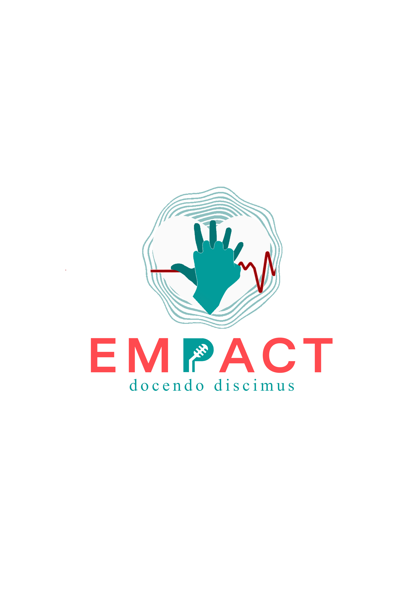
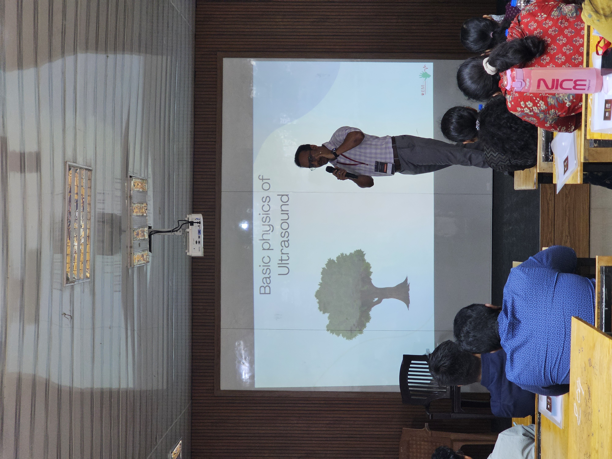
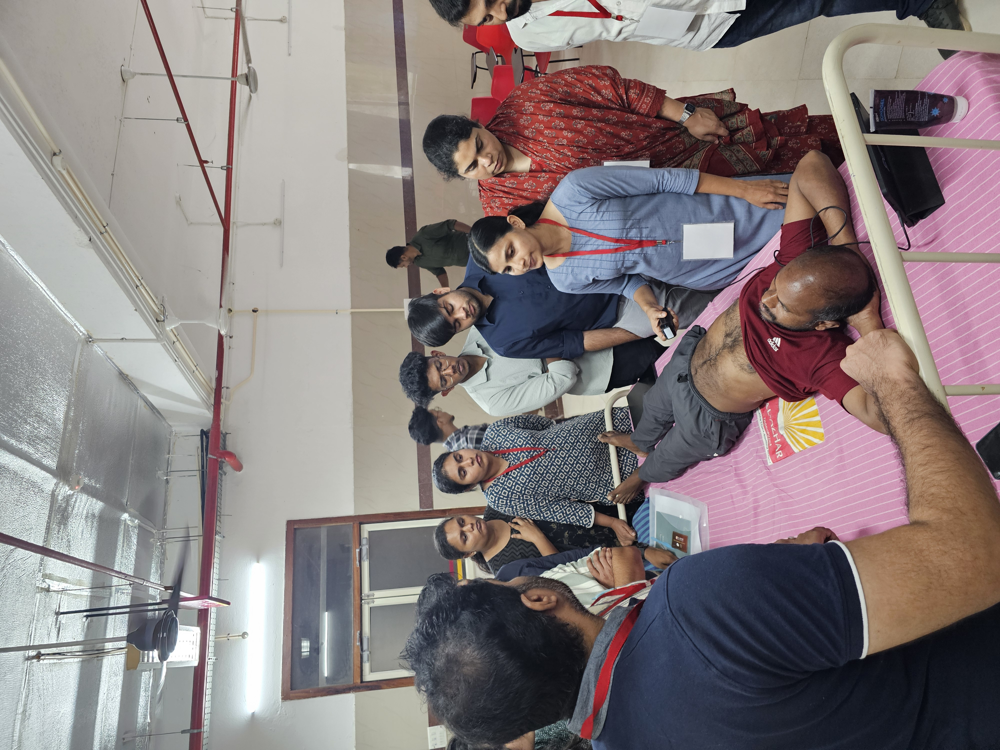
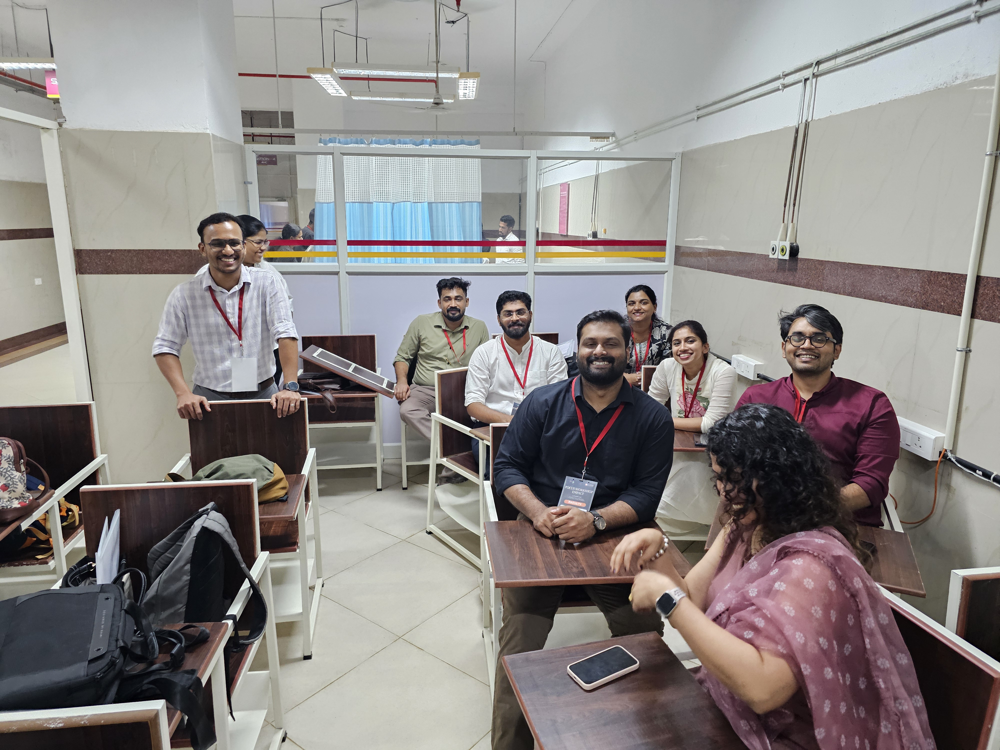
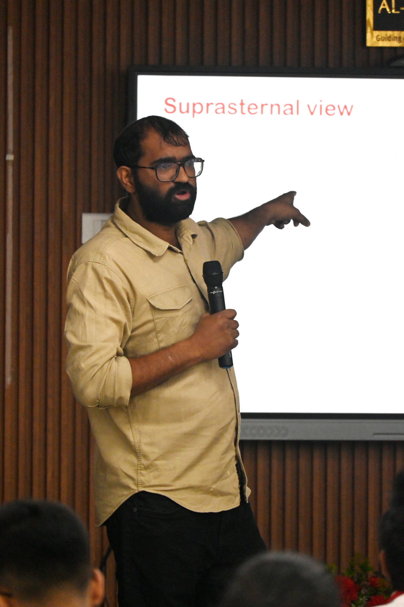
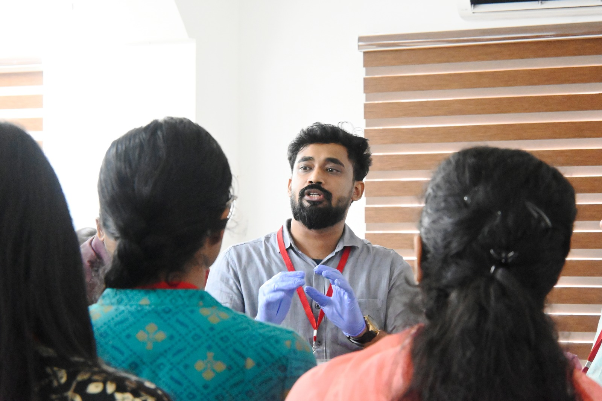
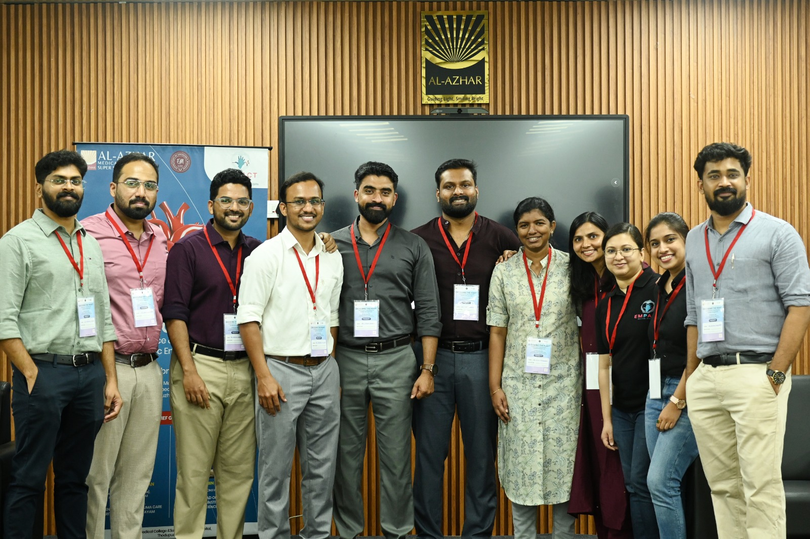
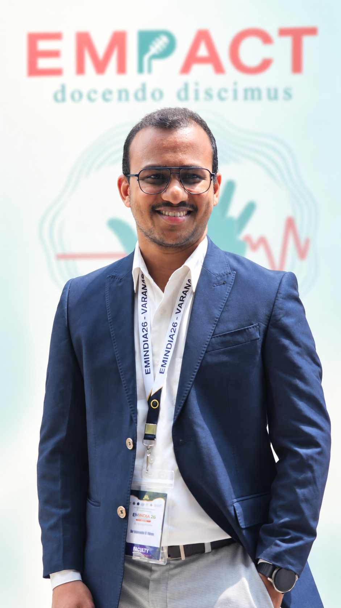

01
Clinical programs
Focused initiatives that support better practice, preparedness, and patient care across emergency settings.
Learn more →
A professional group for emergency physicians
EMPACT brings emergency physicians together to grow practical skills, lead meaningful programs, and strengthen the future of emergency medicine.
Our purpose
EMPACT is a registered professional group focused on advancing emergency medicine through quality programs, academic exchange, and a connected physician community.
We turn shared expertise into learning that is useful, relevant, and built for the realities of emergency care.
Meet the communityWhat we do
Our programs create room to learn, exchange ideas, and improve the care we provide—together.
01
Focused initiatives that support better practice, preparedness, and patient care across emergency settings.
Learn more →02
Case discussions, journal clubs, workshops, and forums designed to keep knowledge moving.
Learn more →03
A generous peer network for mentorship, collaboration, and a stronger collective voice.
Learn more →Learn in real time
From hands-on training to conversations at the edge of clinical practice, EMPACT’s academic activities are shaped by working emergency physicians.
EMPACT learning series
“The best learning starts with the people in the room.”
Conference & workshop
An interactive, hands-on learning experience covering high-stakes cardiac emergencies for emergency medicine practitioners.
Workshop 01
Our first hands-on point-of-care ultrasound workshop brought practical teaching and bedside learning together.



Workshop highlights
Practical teaching, shared learning, and the energy of a room committed to better emergency care.



Watch the recap
A short look at the conversations, teaching, and skills that made this session memorable.
More on YouTubeThe people behind EMPACT
Emergency physicians united by a belief that practical learning and purposeful collaboration can move care forward.

Founding member
Founding member
Founding member
Founding member
Our community
is where emergency physicians connect around better learning, better programs, and better care.
Get involved
Join a growing community working to make emergency medicine stronger—one conversation, program, and collaboration at a time.
Contact EMPACTFor membership enquiries, write to empact.em@gmail.com or message @empact.em.